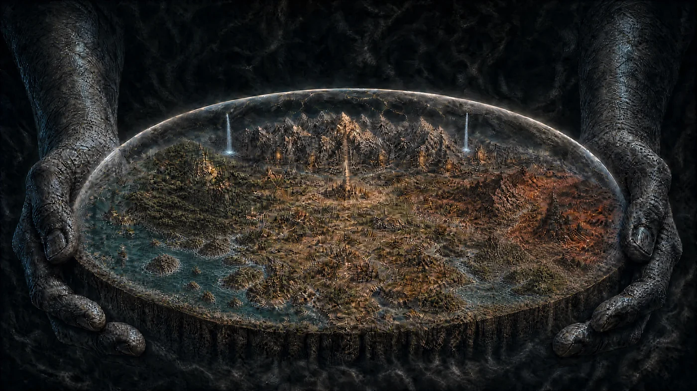

Nas mãos do Criador
Antes dos reinos, das estradas e das histórias contadas à mesa, existe uma pergunta: o que sustenta Valédria?

Um mundo dentro de um globo
Valédria existe dentro de um globo de neve, suspenso entre duas mãos gigantes. Seus habitantes conhecem essa presença apenas como O Criador. O sol e a lua orbitam por fora da esfera; dentro dela, povos constroem cidades, atravessam fronteiras e tentam compreender o céu que os envolve.
Em dias claros, é possível avistar os monólitos celestiais: estruturas tão colossais que parecem marcar o limite entre o mundo conhecido e aquilo que está além.
O nome que não explica o mistério
Nenhum povo sabe dizer com certeza o que O Criador realmente é. Os templos falam dele com reverência. Estudiosos procuram respostas em textos antigos. E há quem simplesmente siga a vida, preocupado com a próxima colheita ou com a segurança da estrada.
As mãos protegem o mundo do que está lá fora… ou guardam algo que deve permanecer dentro?
Entre a crença e o desconhecido
As florestas antigas, as ruínas e as fronteiras marcadas pela magia fazem parte da paisagem. O que cada povo conta sobre elas nem sempre oferece a mesma resposta. Uma certeza para um sacerdote pode ser uma hipótese para um estudioso — e apenas um rumor para um viajante.
As perguntas sobre O Criador e o que existe além da esfera acompanham quem olha para o céu. As respostas, se existem, ainda precisam ser encontradas.
A sua história começa perto do chão
Você não precisa compreender os segredos do universo para entrar em Valédria. Uma vila, um contrato e pessoas com quem contar já são um começo. Os grandes mistérios podem esperar até que uma escolha leve seu grupo para perto deles.
Quando chegar a hora de partir, o que seu personagem levará consigo: uma certeza, uma promessa ou uma pergunta?